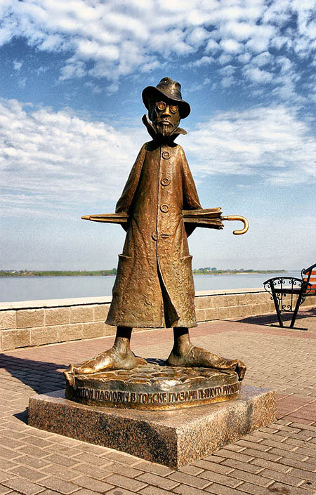
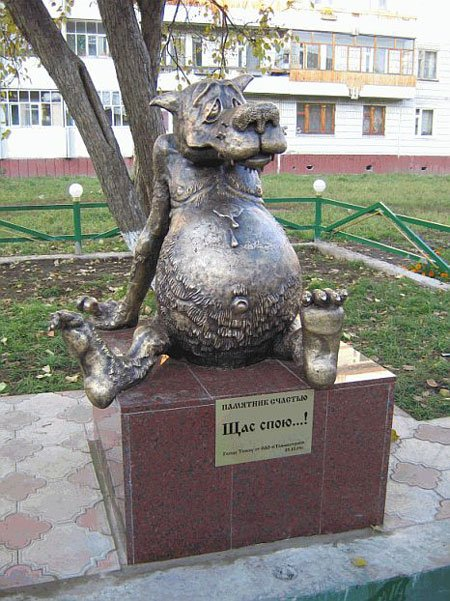
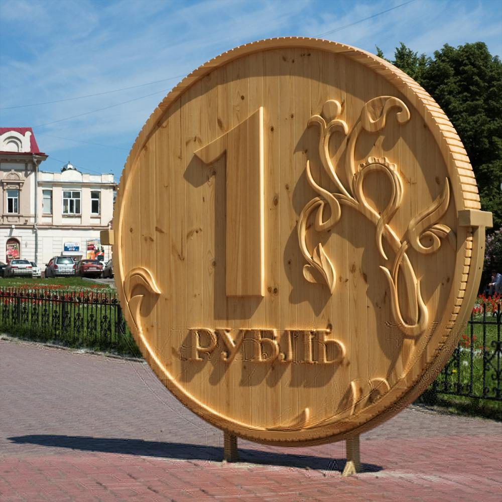
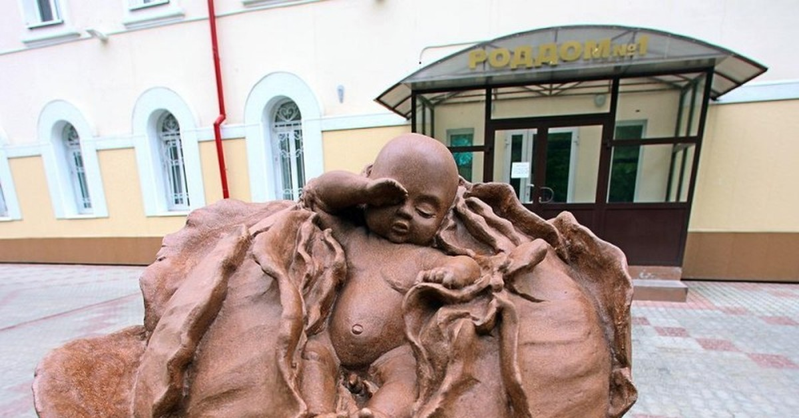

Памятник Чехову (набережная Томи)
Установлен в 2004 году. Писатель, посетивший Томск в 1890 году по пути на Сахалин, нелестно отозвался о городе, назвав его «свиньим городом» и «нетрезвым». Томичи ответили иронией: бронзовый Антон Павлович изображен в гротескном виде — с перекошенными очками, нелепой шляпой и большими босыми ногами. На постаменте красуется надпись: «Антон Павлович в Томске глазами пьяного мужика, лежащего в канаве и не читавшего "Каштанку"».

Памятник Счастью (ул. Шевченко, 19/1)
Бронзовый волк из мультфильма «Жил-был пес». Если почесать ему живот, волк голосом Армена Джигарханяна произносит: «Щас спою!». Памятник стал настоящим символом томского гостеприимства и оптимизма.

Памятник Рублю
Двухметровая копия монеты номиналом 1 рубль, вырезанная из цельного соснового бревна. Внесена в Книгу рекордов России как самая большая копия монеты. Памятник регулярно обновляют, так как дерево подвержено гниению.

Памятник «Младенец в капусте»
Расположен у входа в один из роддомов. Скульптура изображает кочан капусты, из которого выглядывает улыбающийся малыш. Очень популярное место для фотосессий новоиспеченных родителей.

История (главная)
Необычные памятники